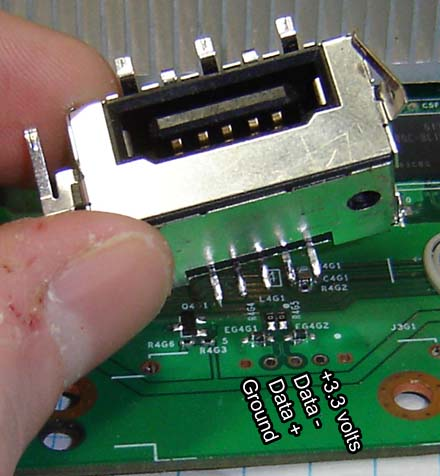

Memory unit
General Information
- Memory Units (64 MB) require no setup or configuration. (Plug & Play)
- Xbox 360 accepts two Memory Units.
-
Each unit contains three IC's:
-
Custom Microsoft ASIC (marked as X805867-002)
- Samsung NAND flash memory (IC model depends on memory size i.e. K9F1208U)
- Perhaps an IC EEPROM memory (marked as X803122)
Known Facts
- The Memory card is required in absence of hard drive to play on Xbox Live and to save game progress.
- The memory cards are USB devices, albeit with custom connectors and with 3.3V power (not 5V).
Pinout

Inside the memory unit
Flash Contents
| Address | Length (bytes) | Contains |
|---|---|---|
| 0x00000 | 16 | Text String "DUMBO FIL format" |
| 0x0020B | 5 | 5 byte value |
| 0x04200 | 32 | MS text string |
| 0x04220 | 15 | Ascii serial nr of MU |
| 0x0440B | 5 | 5 byte value |
| 0x10800 | ~ | Data start |
FATX Partition Locations
| Address | Type |
| 0x00 | Partition 1 |
| 0x7ff000 | Partition 2 |
Speculation
The connections of the small 8-pin IC:
| Pin# | Description | Characteristic |
|---|---|---|
| 1 | GND | A0 |
| 2 | NC | A1 |
| 3 | NC | A2 |
| 4 | NC | GND |
| 5 | to pin 22 of ASIC | SDA |
| 6 | to pins 20 and 21 of ASIC | SCL |
| 7 | to pin 3 of ASIC | WP |
| 8 | VCC | VCC (3.3V) |
At the bottom side of this chip is written:
PHILK2B
EL526
901IA2
Most plausible theory is that the IC is an IC EEPROM memory. I've added in brackets possible 24CXXX family pin names. GND could be A0 because in most cases adress lines (A0-A2) are connected to ground.
Other theory (less plausible) is that it might be a NXP (Philips) P89LPC901FD microcontroller with its die upside down? archive.org mirror: here
When supplying 3.3 volts to the Memory Unit: Measurements at pins 5, 6, and 7 show that there is a clock signal of 5Mhz present on pin 7 (in burst of 16 cycles). Every 16 cycles, one bit is transferred on pin 6. 3ms after powerup data communication ends. Note: This looks like SPI, pin 7 - SCK, Pin 6 - /SS, Pin 5 - MODI.
But SPI needs four wires. It's more like I2C which needs only two lines (SDA, SCL) and optionally WP (Write Protect).